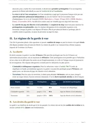

La mise en examen et l'instruction pénale, comment ça marche
La mise en examen place une personne sous un statut particulier pendant l'instruction, dès que le juge d'instruction réunit contre elle des indices graves ou concordants, en application de l'article 80-1 du Code de procédure pénale. Elle donne accès à tout le dossier et à un avocat, et la personne reste présumée innocente. Le juge d'instruction peut aussi l'entendre comme témoin assisté, un statut plus léger, qui interdit tout contrôle judiciaire et toute détention provisoire.

L'essentiel en une phrase
Dans les faits divers, la « mise en examen » est presque toujours présentée comme une étape vers une condamnation. En droit, elle ouvre au contraire une phase où la personne concernée peut se défendre pleinement, avec un avocat et l'accès à tout le dossier, avant que quiconque ait tranché sa culpabilité. Le juge d'instruction, un magistrat indépendant du parquet, mène en effet cette phase à charge et à décharge, ce qui veut dire qu'il cherche autant les éléments qui accusent que ceux qui disculpent.
Je vois souvent des étudiants qui confondent la mise en examen avec le statut de témoin assisté, pourtant plus léger, ou qui pensent qu'une mise en examen vaut déjà reconnaissance de responsabilité. En cas pratique, cette confusion fausse la qualification dès la première ligne.
Le juge d'instruction peut donner trois statuts différents à une personne pendant l'instruction, et tu commences toujours par identifier lequel s'applique. Le simple témoin n'est visé par aucun soupçon sérieux. Le témoin assisté a déjà droit à un avocat et à l'accès au dossier, mais il ne peut être placé ni sous contrôle judiciaire ni en détention. Seul le mis en examen peut subir ces deux mesures de contrainte, parce que des indices graves ou concordants rendent sa participation vraisemblable.

Fiche complète
Procédure pénale L3
Le juge d'instruction et sa saisine
Le juge d'instruction est un magistrat du siège, donc indépendant du parquet, chargé d'instruire à charge et à décharge selon l'article 81 du Code de procédure pénale. Il recherche donc les éléments qui accusent la personne visée comme ceux qui la disculpent, une exigence à rappeler dès que ta copie discute son rôle. D'après l'article 79 du même code, son intervention est obligatoire pour un crime. Elle est facultative pour un délit, et exceptionnelle pour une contravention.
Le juge d'instruction ne peut pas se saisir lui-même, et deux voies déclenchent son intervention. La plus fréquente est le réquisitoire introductif du procureur de la République, c'est-à-dire sa demande écrite d'ouvrir une instruction (article 80). La victime dispose d'une seconde voie, la plainte avec constitution de partie civile de l'article 85. Depuis la loi du 5 mars 2007, elle doit d'abord avoir déposé une plainte simple restée sans réponse utile pendant trois mois. Cette voie existe parce que la Chambre criminelle, dans l'arrêt Laurent-Atthalin du 8 décembre 1906, a permis à la victime de déclencher elle-même les poursuites, qui étaient jusque-là réservées au parquet.
Un point technique est souvent oublié en cas pratique. Le juge d'instruction est saisi de faits, quelles que soient les personnes en cause. C'est ce qu'on appelle une saisine in rem. Le juge peut donc mettre en examen n'importe quelle personne dont l'implication apparaît au fil de son enquête, sans nouvelle plainte, tant que les faits reprochés restent ceux visés par le réquisitoire initial. S'il découvre des faits nouveaux et distincts, il doit en revanche demander au procureur un réquisitoire supplétif avant de pouvoir les instruire.
Les conditions de la mise en examen, l'article 80-1
L'article 80-1 du Code de procédure pénale pose une seule condition de fond. Le juge d'instruction peut mettre en examen seulement les personnes contre qui existent des indices graves ou concordants rendant vraisemblable qu'elles aient pu participer, comme auteur ou complice, aux infractions dont il est saisi. Ce seuil est volontairement souple. Il se situe entre le simple soupçon, qui suffit seulement pour le statut de témoin assisté, et la preuve certaine, exigée au moment du jugement.
La mise en examen suppose ensuite un débat contradictoire préalable. Le juge d'instruction doit entendre les observations de la personne, ou la mettre en mesure de les présenter, en présence de son avocat, avant de la mettre formellement en examen. Cette étape porte un nom précis, l'interrogatoire de première comparution, organisé par l'article 116 du même code. Avant cette étape, le juge doit aussi vérifier que le statut plus léger de témoin assisté ne suffit pas, comme l'exige le troisième alinéa de l'article 80-1.
Une réforme récente a changé une règle que beaucoup de supports de révision enseignent encore. Jusqu'en 2024, l'absence d'indices graves ou concordants pouvait entraîner la nullité pure et simple de la mise en examen devant la chambre de l'instruction. La loi du 20 novembre 2023, entrée en vigueur le 30 septembre 2024, a déplacé la mention « à peine de nullité » du premier alinéa de l'article 80-1 vers le second, qui sanctionne seulement les irrégularités de forme du débat contradictoire. Une personne ne peut donc plus faire annuler sa mise en examen au seul motif que les indices sont insuffisants. Il lui reste la demande de démise en examen de l'article 80-1-1, adressée directement au juge d'instruction, au moment de la mise en examen ou dans les dix jours qui suivent, puis tous les six mois. C'est l'erreur que je corrige le plus souvent dans les copies sur ce chapitre.
Tu révises ta procédure pénale ?
Tu peux recevoir gratuitement mon guide « Réviser le droit sans s'épuiser ». Mes élèves s'en servent pour répartir leurs révisions sur tout le semestre, et ils retiennent ainsi les articles et les arrêts jusqu'au jour du partiel.
Le témoin assisté, les articles 113-1 et suivants
Le statut de témoin assisté, créé par la loi du 15 juin 2000, occupe une place intermédiaire entre le simple témoin et le mis en examen. Il concerne notamment une personne visée par une plainte ou nommée dans un réquisitoire du procureur. Il concerne aussi une personne mise en cause par des éléments qui ne justifient pas encore une mise en examen. Contrairement au simple témoin, elle a déjà droit à un avocat et à l'accès au dossier de la procédure.
Le témoin assisté ne peut être placé ni sous contrôle judiciaire ni en détention provisoire, quelle que soit la gravité des faits. L'article 113-6 lui permet en revanche de demander lui-même sa mise en examen. Ce choix peut surprendre, mais il lui donne davantage de moyens pour demander des actes d'instruction utiles à sa défense.
Une dernière règle protège la frontière entre les statuts. L'article 105 interdit au juge d'instruction d'entendre comme simple témoin, sans les garanties du témoin assisté ni celles du mis en examen, une personne contre qui existent déjà des indices graves et concordants. Une fois ce seuil atteint, le juge ne peut donc pas retarder la mise en examen en gardant la personne au statut de simple témoin.
En cas pratique, ce tableau sert à qualifier le statut de la personne avant de discuter la suite de la procédure. Une même personne peut d'ailleurs passer du statut de témoin assisté à celui de mis en examen, dès que de nouveaux éléments constituent des indices graves ou concordants. L'exemple plus bas montre ce passage.
Les actes d'instruction
Le juge d'instruction dispose de nombreux actes pour établir la vérité. Il peut interroger le mis en examen, organiser une confrontation entre plusieurs personnes ou entendre des témoins sous serment (articles 101 et suivants). Il peut aussi se rendre sur les lieux, ordonner une perquisition ou demander une expertise. Il doit toutefois interroger lui-même le mis en examen. La plupart des autres actes peuvent en revanche être confiés à un officier de police judiciaire par commission rogatoire, c'est-à-dire par délégation écrite (article 151).
Les expertises obéissent à un régime renforcé depuis la loi du 5 mars 2007, codifié aux articles 156 et suivants. Les parties disposent d'un délai de dix jours après la notification de la décision d'expertise pour en contester la mission ou proposer un expert de leur choix, en application de l'article 161-1. Ce délai protège le mis en examen contre une expertise dont la mission est mal définie dès le départ. Il est souvent oublié en cas pratique, alors qu'il peut changer l'issue d'un dossier technique.
Il faut aussi éviter une confusion de dates. L'article 116-1 impose l'enregistrement audiovisuel des interrogatoires réalisés dans le cabinet du juge d'instruction, mais seulement en matière criminelle. Ce dispositif est antérieur à la loi du 22 décembre 2021, qui a surtout créé un régime distinct de captation des audiences à des fins pédagogiques ou d'intérêt général, sans changer les règles de l'instruction proprement dite. Dans ta copie, cet enregistrement obligatoire ne doit donc pas être attribué à la loi de 2021.
Contrôle judiciaire et détention provisoire
D'après l'article 137, la personne mise en examen, présumée innocente, reste libre, et tu rappelles ce principe avant de discuter une mesure de contrainte. Le juge des libertés et de la détention, magistrat distinct du juge d'instruction depuis la loi du 15 juin 2000, doit toujours choisir la mesure la plus légère possible. Il peut d'abord se limiter à un contrôle judiciaire, prévu par l'article 138, ou préférer ensuite une assignation à résidence avec surveillance électronique, créée par la loi du 24 novembre 2009 à l'article 142-5. La détention provisoire reste un dernier recours, quand ces deux mesures ne suffisent pas.
La détention provisoire suppose d'abord un seuil de peine. L'article 143-1 fixe ce seuil à trois ans d'emprisonnement encouru dans le cas général. Beaucoup de fiches oublient une exception. Pour certains délits contre les biens prévus par le Livre III du Code pénal, comme le vol ou l'escroquerie, ce seuil passe à cinq ans si la personne n'a jamais été condamnée à plus d'un an d'emprisonnement ferme. Une fois ce seuil vérifié, le juge doit encore retenir l'un des motifs de la liste fermée de l'article 144, par exemple un risque de pression sur les témoins ou de nouvelle infraction. Il doit aussi démontrer qu'aucune mesure plus légère ne suffit.
Le juge des libertés et de la détention statue après un débat contradictoire, par une ordonnance spécialement motivée en application de l'article 144-1, sous peine de voir la détention levée. La durée de la détention dépend de la gravité des faits. Pour un délit, elle est de quatre mois renouvelables (article 145-1), dans la limite d'un ou deux ans selon les cas. Pour un crime, elle est d'un an au départ (article 145-2), dans la limite de deux à quatre ans selon la peine encourue.
Le mis en examen détenu dispose de plusieurs recours. Il peut demander sa mise en liberté à tout moment (article 148). Il peut aussi faire appel devant la chambre de l'instruction dans les dix jours, ou saisir en référé-liberté le président de cette même chambre, qui statue seul et sans audience sous trois jours ouvrables, en application de l'article 187-1. Si l'instruction se termine par un non-lieu, une relaxe ou un acquittement définitif, la personne détenue à tort peut enfin demander réparation de son préjudice sur le fondement de l'article 149, devant le premier président de la cour d'appel.
Les droits de la défense pendant l'instruction
L'avocat du mis en examen ou du témoin assisté intervient tout au long de l'instruction, et l'article 114 lui garantit le temps de préparer chaque acte. Il doit être convoqué au plus tard cinq jours ouvrables avant chaque interrogatoire ou confrontation, et le dossier de la procédure doit être mis à sa disposition au plus tard quatre jours ouvrables avant ce même acte. Si ces délais ne sont pas respectés, l'acte peut être contesté devant la chambre de l'instruction.
Le mis en examen, le témoin assisté et la partie civile peuvent aussi demander au juge d'instruction tout acte qui leur paraît utile, par exemple une expertise complémentaire ou une audition. Le juge doit statuer dans le mois qui suit la demande, et motiver spécialement un refus. S'il ne répond pas dans ce délai, ou s'il refuse sans motiver sa décision, la partie peut saisir le président de la chambre de l'instruction. Ce recours est à citer dès que le sujet décrit une défense qui n'obtient pas les actes qu'elle demande.
La clôture de l'instruction
Une fois l'instruction achevée, le juge d'instruction doit d'abord passer par une phase contradictoire obligatoire, prévue par l'article 175. Il notifie d'abord un avis de fin d'information aux parties, qui disposent alors d'un délai pour formuler leurs dernières observations ou demandes d'actes, trois mois en principe, réduits à un mois si une personne reste détenue. Cette phase laisse ainsi à la défense le temps de présenter un dernier argument ou une dernière demande.
Le juge rend alors une ordonnance de règlement, qui peut prendre trois formes. Il prononce un non-lieu quand les charges réunies restent insuffisantes, en application de l'article 177. Il peut aussi renvoyer la personne devant le tribunal de police ou le tribunal correctionnel quand les faits constituent une contravention ou un délit, en application des articles 178 et 179. Il peut enfin ordonner sa mise en accusation devant la cour d'assises quand les faits constituent un crime, en application de l'article 181. Cette ordonnance dessaisit le juge d'instruction, c'est-à-dire qu'elle met fin à sa mission, et elle fixe définitivement les faits qui seront jugés.
Le non-lieu est parfois provisoire. Quand il repose sur l'insuffisance des charges, on parle de non-lieu de fait, et l'article 188 permet de rouvrir l'instruction si des charges nouvelles apparaissent. Le non-lieu de droit, fondé sur l'absence même d'infraction, est au contraire définitif, parce qu'il a l'autorité de la chose jugée. La partie civile peut faire appel d'un non-lieu devant la chambre de l'instruction en application de l'article 186-1, et le ministère public dispose d'un droit d'appel plus large encore, en application de l'article 185. Enfin, l'ordonnance de règlement purge les nullités de l'instruction, c'est-à-dire qu'on ne peut plus les invoquer ensuite, sauf si une demande d'annulation a été déposée devant la chambre de l'instruction dans le délai de six mois prévu par l'article 174.
L'utiliser dans une copie
Dans un cas pratique. Tu qualifies toujours le statut de la personne, simple témoin, témoin assisté ou mis en examen, avant de discuter des mesures de contrainte. Tu vérifies ensuite que l'énoncé contient réellement des indices graves ou concordants, car un simple soupçon ne suffit pas à mettre en examen. La page sur la méthode du cas pratique reprend le raisonnement en deux temps, avec la majeure qui énonce la règle et la mineure qui l'applique aux faits.
Prenons un cas inventé pour t'entraîner. Fabrice est entendu par un juge d'instruction dans une enquête pour escroquerie en bande organisée. Au moment de son audition, le dossier ne contient qu'un signalement bancaire et un témoignage isolé, des éléments encore insuffisants pour caractériser des indices graves ou concordants. Le juge l'entend donc comme témoin assisté, avec un avocat commis d'office. Deux mois plus tard, une expertise comptable établit un lien direct entre Fabrice et les flux frauduleux. Le juge peut alors le mettre en examen, après un nouveau débat contradictoire. Il peut aussi envisager pour la première fois une mesure de contrainte, comme un contrôle judiciaire, et même une détention provisoire, puisque l'escroquerie en bande organisée est punie bien au-delà du seuil de l'article 143-1. Désormais mis en examen, Fabrice peut aussi demander une contre-expertise.
Dans une dissertation. Un sujet sur la mise en examen oppose l'efficacité de l'enquête à la présomption d'innocence. La réforme du 20 novembre 2023 a d'ailleurs réduit la protection du mis en examen sur la question des indices, puisqu'il ne peut plus obtenir la nullité pour ce motif. Tu peux aussi relier cette notion au reste de la procédure pénale, notamment au contrôle d'identité, à la garde à vue et à la comparution immédiate, qui interviennent en amont ou en alternative à l'instruction, ainsi qu'à l'ensemble du programme de procédure pénale L3, qui reprend chaque étape de l'enquête avec ses conditions précises.
Les erreurs à éviter avec la mise en examen
Ces erreurs reviennent le plus souvent dans les copies sur ce chapitre, et tu peux les vérifier avant de rendre la tienne.
- Confondre mise en examen et culpabilité. La personne mise en examen reste présumée innocente. La mise en examen ouvre une phase où elle peut se défendre pleinement, avec un avocat et l'accès au dossier.
- Croire qu'une mise en examen sans indices suffisants reste annulable. Depuis le 30 septembre 2024, seule une demande de démise en examen fondée sur l'article 80-1-1 permet de contester l'insuffisance des indices.
- Attribuer l'enregistrement audiovisuel des interrogatoires à la loi du 22 décembre 2021. Ce dispositif vient de l'article 116-1, antérieur à cette loi, et il concerne seulement la matière criminelle.
- Présenter le seuil de détention provisoire comme fixé uniformément à trois ans. Ce seuil passe à cinq ans pour certains délits contre les biens du Livre III du Code pénal, quand la personne n'a jamais été condamnée à plus d'un an ferme.
- Oublier que le témoin assisté peut demander lui-même sa mise en examen. Ce choix, prévu par l'article 113-6, lui donne davantage de moyens pour préparer sa défense, notamment le droit de solliciter des actes d'instruction.
Questions fréquentes
Qu'est-ce que la mise en examen ?
Quelle est la différence entre témoin assisté et mis en examen ?
Peut-on annuler une mise en examen faute d'indices suffisants ?
Comment se termine une instruction pénale ?

Toute la procédure pénale, de l'interpellation à l'instruction.
Ma fiche de procédure pénale L3 reprend chaque étape de l'enquête. Chaque explication se comprend dès la première lecture, et tu la réutilises en cas pratique.
Voir la fiche de procédure pénale L3